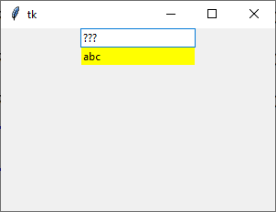

ttk.Entry
ttk.Entry erzeugen
entry = ttk.Entry(parent, Optionen)
| Optionsname | Beschreibung |
|---|---|
| exportselection | tk.YES: Ausgewählter Text kann per
STRG-C ins Clipboard exportiert werden (default) |
| invalidcommand | Eine Funktion, die ausgeführt wird, wenn die Validierungsfunktion unter der Option validatecommand 0 (Null) oder False zurückliefert |
| justify | Ausrichtung des Textes: tk.LEFT, tk.CENTER oder tk.RIGHT |
| show | wenn gesetzt, dann wird der Text selbst ersetzt durch Folgen von '*' oder ähnlichem. Nützlich für Passwort-Felder |
| state | 'readonly': Entry ist nicht editierbar, 'normal': Entry ist editierbar (default) oder
'disabled': Text kann nicht editiert oder ausgewählt werden, keine Interaktion möglich |
| textvariable | Variable, die den Text des Eingabefeldes festhält |
| validate | none (default), focus, focusin, focusout, key oder all, bestimmt, wann validiert wird |
| validatecommand | Funktion die den Text validiert, muss einen Boolean zurückliefern |
| width | Breite des Eingabefeldes in mittlere Zeichenbreite |
ttk.Entry kennt die Standardoptionen: class_, cursor, font, foreground, placeholder, style, takefocus und xscrollcommand
Das folgende Programm stellt ein Eingabefeld als Passwort-Feld vor. Der Text wird in einem Label angezeigt:
import tkinter as tk
from tkinter import ttk
class A(tk.Tk):
def __init__(self):
super().__init__()
self.geometry("300x200")
self._createWidgets()
def _createWidgets(self):
self.svar = tk.StringVar()
self.entry = ttk.Entry(self,
textvariable=self.svar,
show='?')
self.entry.pack()
ttk.Label(self, textvariable=self.svar, background='yellow', width=20).pack()
if __name__ == '__main__':
window = A()
window.mainloop()Validierung
Die folgende Tabelle zeigt die Validierungsmodi zur Option validate:
| Modi | Beschreibung |
|---|---|
| none | keine automatische Validierung |
| key | Pre-Validierung, bevor ein neues Zeichen eingefügt/gelöscht wird. Änderung wird abgewiesen, wenn Validierung scheitert |
| focus | Re-Validierung, wenn das Eingabefeld den Fokus erhält oder abgibt |
| focusin | Re-Validierung, wenn das Eingabefeld den Fokus erhält |
| focusout | Re-Validierung, wenn das Eingabefeld den Fokus abgibt |
| all | alle obengenannten Modi |
Die folgende Tabelle zeigt die Substituierungen zur Validierungsfunktion:
| Substituierung | Beschreibung |
|---|---|
| %d | Typ: 1 Eingabevalidierung, 0 Löschvalidierung oder -1 Revalidierung |
| %i | Index, der hinzugefügt oder gelöscht wird. Ungültige Werte werden mit -1 gekennzeichnet |
| %P | für den Mode key (Prevalidierung): Neuer Wert im Entry, wenn die Prevalidierung akzeptiert wurde, sonst: Inhalt des Eingabefeldes (Revalidierung) |
| %s | Inhalt vor der Änderung |
| %S | Eingefügter oder gelöschter Text, sofern vorhanden |
| %v | Wert der Option validate |
| %V | Beschreibung des Modes, das die Validierung angestoßen hat: key, focus… |
| %W | Name des Eingabefeldes in Tcl/Tk-Notation |
Die Umsetzung der Tcl/Tk-Validierung erfolgt mit Hilfe einer Validierungsfunktion,
die man zuerst registrieren muss. Dafür ist die
Zeile validateFunc = self.register(self._entryValidate) da.
Das folgende Programm erlaubt nur Ziffern:
import tkinter as tk
from tkinter import ttk
class A(tk.Tk):
def __init__(self):
super().__init__()
self.geometry("300x200")
self._createWidgets()
def _createWidgets(self):
validateFunc = self.register(self._entryValidate)
self.svar = tk.StringVar()
self.entry = ttk.Entry(self,
textvariable=self.svar,
invalidcommand=self._onInvalid,
validate='all',
validatecommand=(validateFunc, '%d', '%s', '%S'))
self.entry.pack()
ttk.Label(self, textvariable=self.svar, background='yellow', width=20).pack()
def _onInvalid(self):
print('invalid')
def _entryValidate(self, reason, oldText, editText):
"""Nur Ziffern"""
r = int(reason)
if reason == '0':
print('Delete Text:', editText, 'from: ', oldText)
return True
if reason == '1':
print('Insert Text:', editText, 'to: ', oldText)
return editText in '0123456789'
return True
if __name__ == '__main__':
window = A()
window.mainloop()Entry-Methoden
Indices:
- Zahl: numerischer Index des Zeichens im Entry, startet bei 0
@Zahl: X-Position eines Zeichensend: gedachte Position hinter dem letzten Zeicheninsert: das Zeichen hinter der Einfügemarkesel.first, sel.last: Anfang und Ende der Auswahl
| Funktion | Parameter | Rückgabewert | Beschreibung |
|---|---|---|---|
| bbox(index) | Index | Rechteck | Gibt ein Rechteck (Pixel-Koordinaten) aus, das das Zeichen am index enthält |
| delete(anfang, ende=None) | anfang, ende: Indices | - | Löscht die Zeichen von anfang bis ende oder nur das einzelne Zeichen |
| get() | - | String | Gibt den Inhalt der Textzeile zurück |
| icursor(index) | Index | - | Setzt die Einfügemarke auf die mit index angegebene Position |
| index(index) | Index | numerischer Index | Gibt den Index des Zeichens am angegebenen Index zurück |
| insert(index, text) | Index und Text | - | fügt Text vor dem Index ein |
| selection_clear() | - | - | Entfert die Auswahl-Markierung |
| selection_present() | - | Boolean | True: Entry enthält Textauswahl |
| selection_range(anfang, ende) | anfang, ende: Indices | - | Text zwischen den Indices wird ausgewählt |
| validate() | - | 0 oder 1 | Revalidiert. Rückgabewert 0: Validierung scheiterte. |
Weiterhin werden die folgenden allgemeinen Widgetmethoden unterstützt:
- Konfigurationsmethoden:
cget(…)undconfigure(…) - Sonstige Methoden:
identify(…),instate(…)undstate(…)